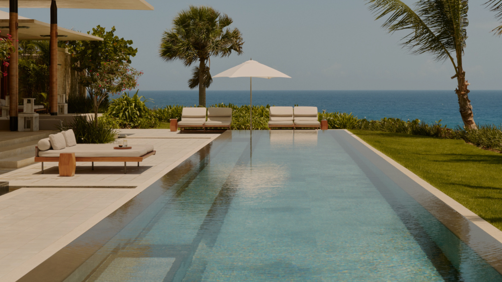
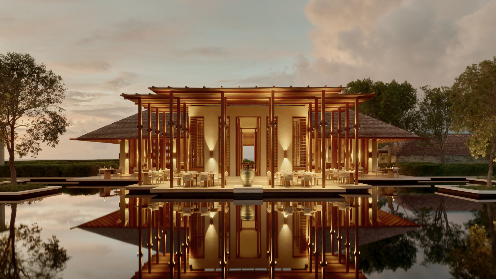
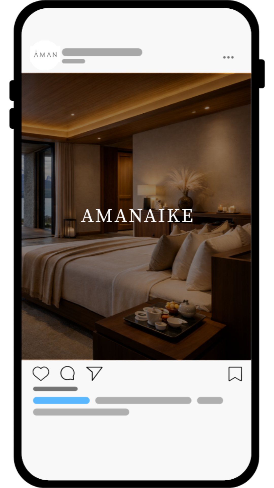
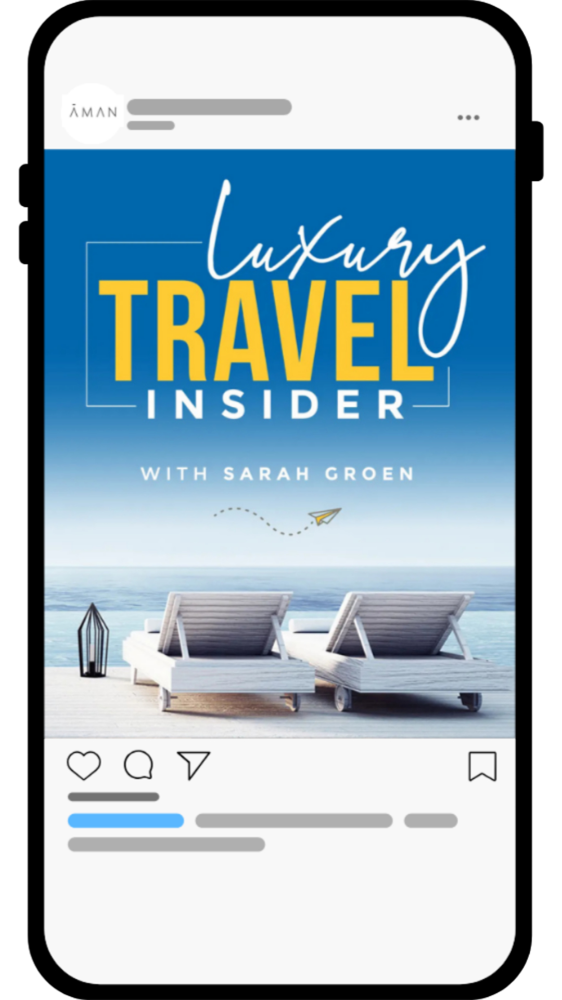
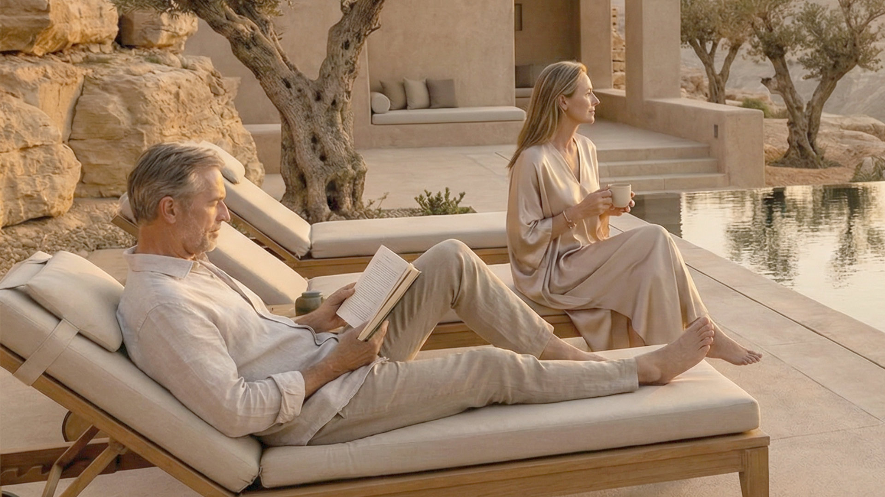
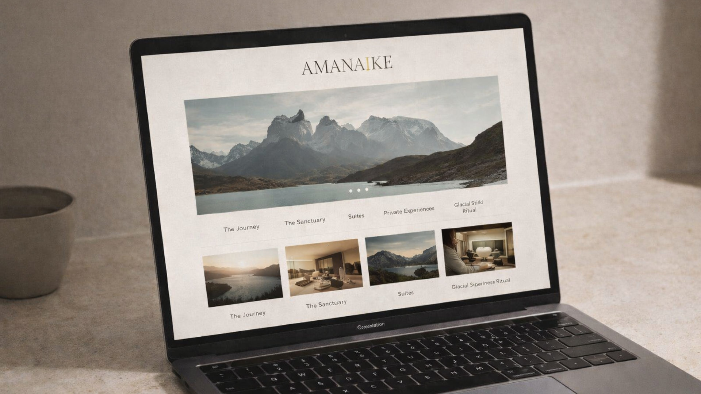
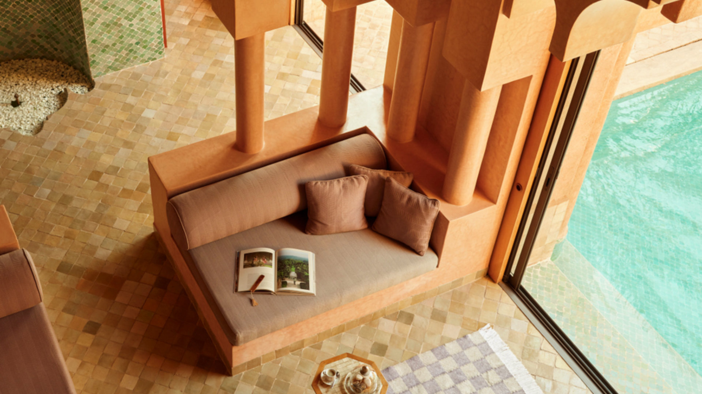
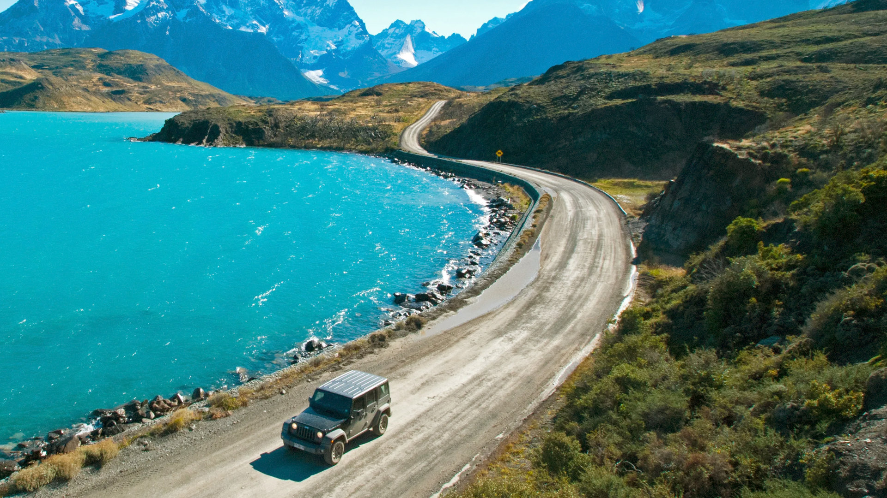
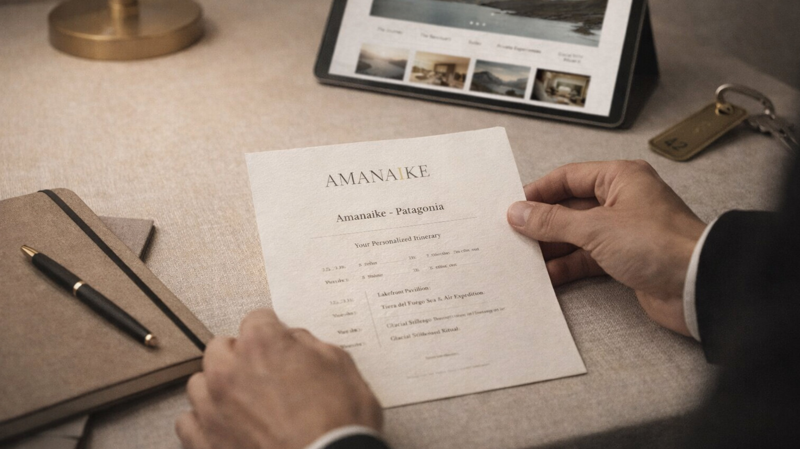
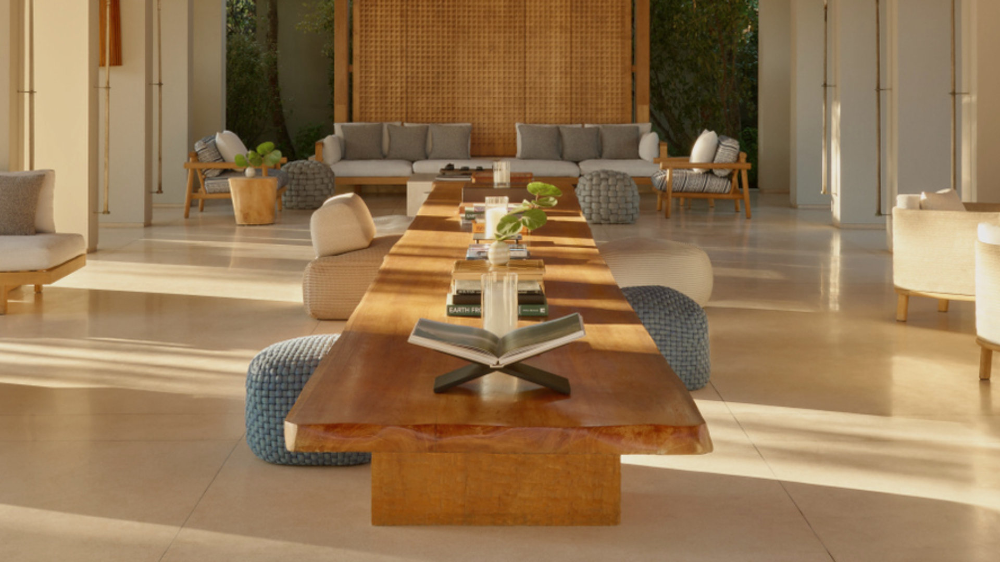

Aman is an ultra-luxury sanctuary in Chilean Patagonia near Torres del Paine National Park with a project in mind to protect the brand’s DNA while opening a new frontier for growth. The project reimagines Patagonia not as an activity-first destination, but as a place of privacy, stillness, wellness, and emotional restoration. Designed through Aman’s philosophy of quiet luxury, the concept positions the brand’s first South American resort as a secluded retreat where architecture, landscape, and service work together to create a deeply immersive and restorative guest experience.

The central idea was to create Amanaïke, described as ‘A Secret at the Edge of the World.’ Rather than competing with existing Patagonia properties through adventure positioning alone, the concept reframed the destination through Aman’s lens of restraint, contemplative luxury, and emotional reset. The resort was designed as a low-density lakeside sanctuary on the southeastern bank of Lake Sarmiento, where guests would experience panoramic views, personalized wellness, cultural immersion, and Aman’s signature sense of calm.
A key insight behind the project was that Patagonia is widely marketed as an adventure destination, but there is far less ownership of the region as a place for quiet luxury and restoration. The concept therefore shifted the narrative from activity to stillness. In a travel landscape shaped by overexposure, constant connectivity, and performative consumption, the project argued that true luxury is privacy, silence, and the ability to fully disconnect.”
The primary audience was ultra-high-net-worth travelers, roughly ages 35–65, including executives, founders, creatives, and existing Aman loyalists often referred to as ‘Amanjunkies.’ These guests value privacy, architecture, anticipatory service, wellness, and seamless travel experiences. A secondary audience included intimate corporate retreats and founder-led strategy getaways seeking a remote but highly refined environment for reflection, focus, and renewal.


The marketing strategy focused on high-touch, brand-aligned channels that could build early demand without compromising exclusivity. The rollout began with loyalty pre-sell through Aman CRM, concierge outreach, and luxury travel advisors, giving top guests private access before the public launch. Public awareness was then built through visually driven social storytelling, luxury print placements, and carefully selected audio channels. The overall communication strategy emphasized quiet aspiration rather than overt promotion, using mood, landscape, and scarcity to reinforce the brand’s positioning.
From a website perspective, the project can be framed as a full concept journey: identifying a whitespace in luxury travel, defining the target guest, positioning the resort around emotional restoration, and translating that strategy into place, experience design, and promotion. It works well as both a brand strategy case study and a hospitality concept development project.
The guest experience was built around four defining pillars: emotional restoration over activity-first travel, an Aman interpretation of Patagonia rather than conventional regional lodging, design and privacy as the primary luxury, and a sanctuary rooted in omotenashi-inspired service and cultural connection. Across the concept, Amanaïke was positioned as both a strategic expansion and a natural expression of Aman’s global identity: low-density, deeply place-based, and intentionally exclusive.





My role in the project focused on campaign and strategic development, helping shape the brand story, guest positioning, promotional direction, and overall articulation of the concept. For the portfolio site, this project should present as a blend of luxury brand strategy, hospitality concepting, market positioning, and experiential storytelling.

Amanaike is envisioned as a quiet, ultra-luxury sanctuary set within the Patagonian landscape, where design, service, and experience are guided by Aman’s philosophy of restraint and place- driven luxury. Positioned along the shores of Lake Sarmiento, the resort blends seamlessly into its surroundings through natural materials, low-density planning, and architecture that recedes into the terrain. With a limited number of rooms and expansive views, the property offers guests a rare sense of privacy, stillness, and immersion.
Open to internships, collaborations, and conversations about luxury brand strategy.